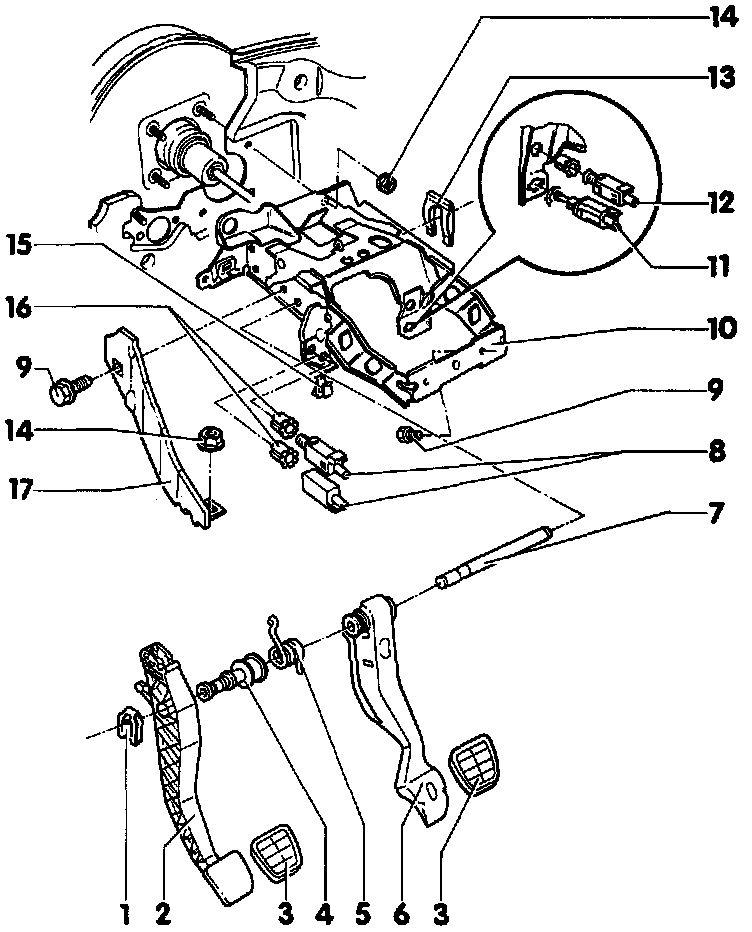

Brake Pedal Assy: Diagrams
Exploded View Of Pedal Cluster:

Legend
1 Clip
2 Clutch Pedal
3 Pedal Cover
4 Bushing
5 Spring
6 Brake Pedal
7 Pedal Shaft
8 Vacuum Vent Valves
9 Bolt
10 Bracket
11 Brake Light Switch (F)
12 Vacuum Vent Valve
13. Brake Pedal Clip
14 Nut
15 Clip
16 Clip
17 Bracket